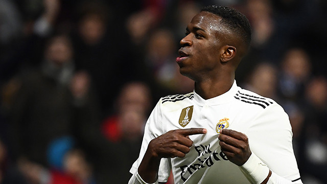
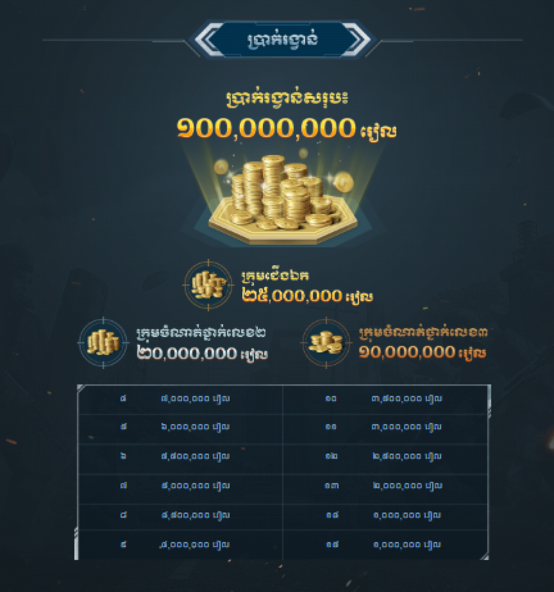

|
KOMSAN NEWS |
ទំព័រដើម | អំពី | កំសាន្ត | បច្ចេកទេស | កីឡា | ទំនាក់ទំនង | ||
 Messi ត្រឡប់មកហ្វឹកហាត់ជាមួយជម្រើសជាតិលើកដំបូងតាំងពីចប់ World Cup ក្រុមជម្រើសជាតិអាហ្សង់ទីនបានប្រមូលផ្ដុំហ្វឹកហាត់នៅទីក្រុងម៉ាឌ្រីដប្រទេសអេស្ប៉ាញកាលពីថ្ងៃម្សិលមិញដោយមានទាំងវត្តមានប្រធានក្រុម Lionel Messi ផង។ ខ្សែប្រយុទ្ធវ័យ៣២ឆ្នាំបានវិលមកលេងឲ្យជម្រើសជាតិវិញលើកដំបូងគិតចាប់តាំងពីអាហ្សង់ទីនខកចិត្តធ្លាក់ចេញពី World Cup ត្រឹមវគ្គ១៦ក្រុមមក។ Messi បានសុំដកខ្លួនពីជម្រើសជាតិមួយរយៈដើម្បីសម្រាកនិងផ្ដោតលើក្លឹបអាជីពក្នុងនោះរូបគេខកខានមិត្តភាព៦ប្រកួត ដែលអាហ្សង់ទីនឈ្នះ៤ ស្មើ១ និងចាញ់១។... |
POPULAR NEWS
Messi ត្រឡប់មកហ្វឹកហាត់ជាមួយជម្រើសជាតិលើកដំបូងតាំងពីចប់ World Cup |
|
|  Vinicius បង្ហើបថាក្លឹបធំមួយចង់ឲ្យលុយច្រើនជាង Real ទៀតផង ខ្សែប្រយុទ្ធក្លឹប Real Madrid កីឡាករ Vinicius Jr បានប្រាប់សារព័ត៌មាន Cadena Ser ថា ក្លឹប Barcelona មានបំណងឲ្យប្រាក់ខែច្រើនជាងក្លឹបអធិរាជសទៀតផង តែរូបគេជ្រើសរើសគម្រោងដែលផ្ដល់ឲ្យដោយក្លឹប Real Madrid។ Vinicius បាននិយាយថា៖ " ឪពុករបស់ខ្ញុំមិនដែលប្រាប់ពីចំណាប់អារម្មណ៍របស់ក្លឹប Real Madrid និងBarcelona ទេ រហូតដល់ក្លឹបទាំងពីរទាក់ទងមក។ បន្ទាប់មក ពួកយើងក៏ទៅមើលក្លឹបទាំងពីរ ហើយក៏ចូលចិត្តទាំង Barcelona និង Real Madrid '' ។... |
 ធ្លាយរូប Pre-Wedding ឱកសុគន្ធ ធ្លាយរូប Pre-Wedding ឱកសុគន្ធកញ្ញា និងគូដណ្តឹង ជិតចូលរោង ការឆាប់ៗ |
|
 តាមដានម៉ូដរថយន្ត Son ធ្លាប់ជិះ មានមួយគ្រឿងតម្លៃ១,៥លានដុល្លារ Heung Min Son ជាកីឡាករដ៏សំខាន់បំផុតទាំងក្នុងក្រុម Spurs និងជម្រើសជាតិកូរ៉េខាងត្បូង។ កីឡាករវ័យ២៦ឆ្នាំរូបនេះត្រូវគេដឹងថាជាមនុស្សស្លូត ប៉ុន្តែក៏ចូលចិត្តដេញម៉ូតរថយន្តដែរ។ Son ដែលមានប្រាក់បៀវត្សរ៍១១ម៉ឺនផោនក្នុងមួយសប្ដាហ៍ ធ្លាប់ប្រើប្រាស់រថយន្តម៉ាកទំនើបជាច្រើនដូចជា Ferrari និង Audi ជាដើម។ ខាងក្រោមជាម៉ូដនិងតម្លៃរថយន្តដែល Son ធ្លាប់ប្រើប្រាស់៖... |
 តោះ! លេងហ្គេមយកទឹកប្រាក់សុទ្ធ ១០០ លានរៀល និងទូរសព្ទ OPPO F11 Pro |
|
| 2019 at ant training | Made by: Chea Menghuy |